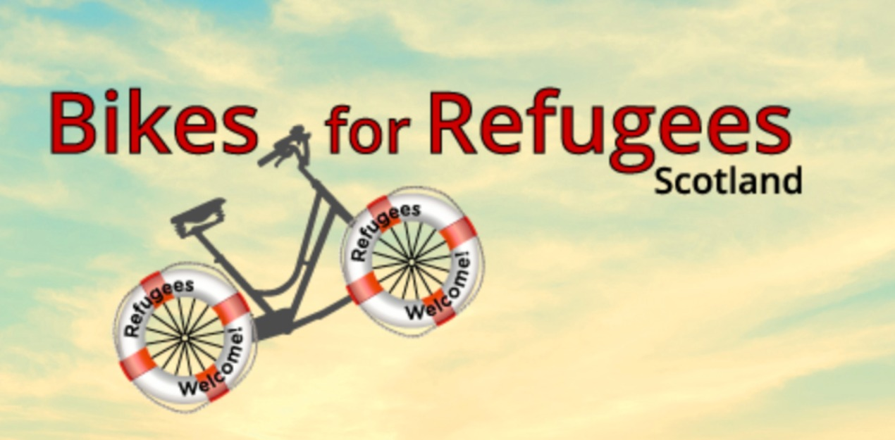
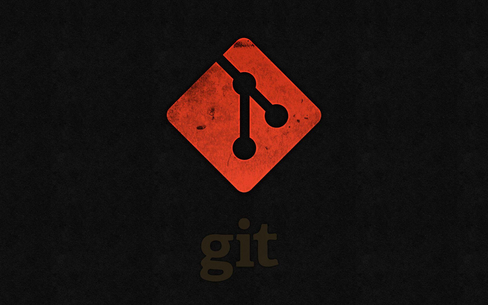

About Me
I'm Berwin Eibo, a dedicated software developer with a background in education. My years of experience in teaching have honed my communication skills and taught me the value of teamwork. I'm passionate about creating innovative solutions to real-world problems through code. I thrive on learning and eagerly embrace new challenges in the dynamic world of technology.
Projects Showcase
Web page developed to help refugees access bicycles, utilizing HTML, CSS, and Flexboxes for layout.
CSS Grid, CSS, HTML, and semantic tags employed to create a web platform aimed at enhancing mobility and expanding WiFi accessibility.
Created a GitHub wireframe using HTML and CSS, with a focus on CSS Grid for layout.
